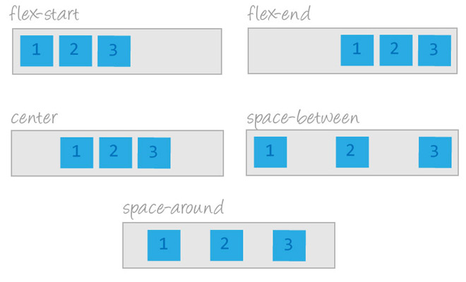

관련 이미지 flex-diection row(default) v.s column

flex-wrap:wrap flex-direction:row-reverse
설명
좀 더 복잡한 레이아웃을 만들기 위해서는 position 프로퍼티에 관해 살펴볼 필요가 있습니다.
.article__items{
position: relative;
display:flex;
flex-direction: row; /* 디폴드 값이 row 임 justify-content 내용이 가로중심이 됨*/
justify-content: space-around; /* 가로 중심 정렬 ( center:가로가운데, space-around: 가로균등정렬 ) */
align-items: flex-start; /* 세로 중심 정렬 ( center:세로가운데, flex-start: 윗쪽붙음, flex-end:아래붙음 ) */
width: 100%;
height:500px;
background-color: darkcyan;
margin:10px;
padding:30px;
}
.article__items-col{
position: relative;
display:flex;
flex-direction: column; /* column 설정시 justify-content 내용이 세로중심이 됨 */
justify-content: space-around; /* 세로 중심 정렬 ( center:세로가운데, space-around :세로균등정렬 ) */
align-items: center; /* 가로 중심 정렬 ( center:가로가운데, flex-start:왼쪽붙음, flex-end:오른쪽붙음 ) */
width: 100%;
height: 1000px;
background-color: darkcyan;
margin:10px;
padding:30px;
}
.article__items-wrap{
position: relative;
display:flex;
flex-direction: row; /* row-reverse 를 설정하면 순서가 반대로 됨 */
justify-content: flex-start;
align-items: center;
flex-wrap: wrap; /* 기본은 no-wrap 이며 박스 크기를 줄여 붙여준다. wrap 일때는 박스크기 그대로 다음줄로 넘어간다 */
width: 100%;
height: 100%;
background-color: darkcyan;
margin:10px;
padding:30px;
}